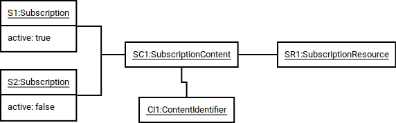
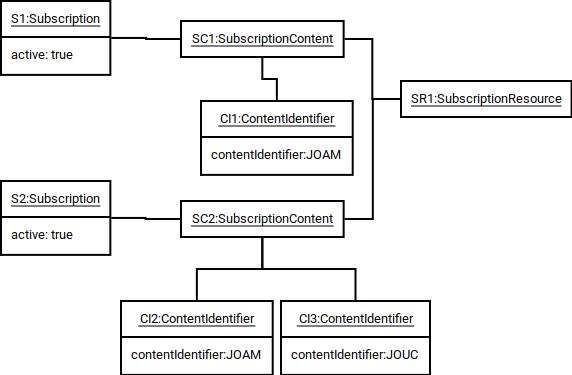

Subscription Manager
Project Documentation
Test Coverage

This document describes the role of subscription content in the subscription manager system.
Subscription content defines the content that an active subscription provides access to. Active subscriptions associated with subscription content indicate what content the identified subscriber has permission to access.
Subscription content is defined within the context of a subscription resource which may represent a website, part of a website, or any other distinct resource that requires a subscription to access. When a request is made to the system to retrieve information about subscription content that an identified subscriber has access to it is within the context of a subscription resource, and only information about subscription content associated with that subscription resource will be returned. In general, a subscription resource should have scope that matches what the resource would expect to get information about in a single request.
Subscription content includes a descriptive name but the definition of the specific content that it provides access to is provided by one or more content identifiers. This allows fine-grained access control with the provision to bundle distinct content into subscription content which is the subject of a subscription. For example, a website (defined as a subscription resource) may host multiple journals. Each journal would have its own content identifier, and subscription content could be defined to allow access with an active subscription to a single journal or a bundle of journals.
A content identifier is a simple string identifier. There are no rules within subscription manager about the format or meaning of the string. It is intended to be interpreted by the resource application code which can apply its own rules about the semantics of a content identifier.
The following object diagrams and descriptive text show possible associations between subscriptions, subscription content and subscription resources. These are intended to be a starting point rather than an exhaustive description of all the ways subscription manager could be used.

This example shows a simple subscription resource that only has one associated subscription content that includes
only one content identifier. Two subscriptions are shown, but only the subscription with true value for active
(S1) allows access to the content defined by the associated subscription content.
This scenario is suitable for a simple website that does not require fine-grained access control. In this example,
subscription resource SR1 defines a website as a subscription resource with the resource URI set to the website URL.
Subscription content SC1 is associated with only on content identifier (CI1) which may have a content identifier
string of FULL-ACCESS which the resource website interprets as allowing access to the entire resource.

This example shows a scenario where a subscription resource has fine grained access control. The resource hosts two journals; the Journal of Anomalous Materials (JOAM) and the Journal of Unforseen Consequences (JOUC).
Two subscription content objects are defined; SC1 includes content identifier CI1 which indicates access rights
to JOAM, while SC2 includes content identifiers CI2 and CI3 which indicate access rights to JOAM and JOUC. Note
that content identifiers are value objects aggregated in a subscription content object so CI1 and CI2 represent
the same content within the resource but are distinct objects.
The subscription S1 associated with SC1 will only have access to JOAM, while the subscription S2 associated with
SC2 will have access to JOAM and JOUC. This could be used for marketing of access to the resource; customers can
choose whether to just purchase access to JOAM, or purchase access to a bundle containing JOAM and JOUC. If the
resource owner wanted to market access to just JOUC then a third subscription content would be created associated with
a content identifier for JOUC.